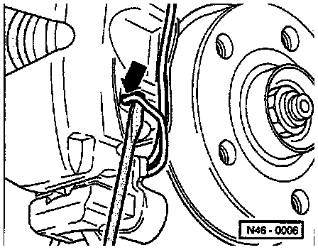
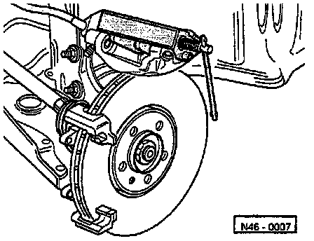

Teves/ATE Caliper
Exploded View Of Teves/ATE Front Brake:

Component Notes And Information
NOTE:
^ During removal and installation procedures, refer to the component location illustration above and component notes below.
^ Separate connector for brake pad wear indicator.
^ To prevent brake fluid spillage draw the brake fluid from the reservoir using a bleeder bottle that is used ONLY for brake fluid.
WARNING: Brake fluid is poisonous and must NEVER be removed by siphoning with your mouth.
CAUTION: After servicing caliper, depress brake pedal firmly several times to seat the pads in their normal operating position.
1 Screw
2 Brake disc
- When worn always replace on both sides
- Remove brake caliper prior to removing
- Brake disc diameter: 288 mm
- Brake disc thickness: 25 mm
- Wear limit: 23 mm
3 Brake pads
- Always replace on both sides
- Pads are different; pad on piston side has retaining spring and has a specified direction of rotation
- Pad thickness: 14 mm
- Wear limit: 7 mm (including backing plate)
4 Retaining spring
- Insert in both brake caliper housing drillings
5 Brake carrier
- Supplied as replacement part assembled with sufficient amount of grease on guide pins
- If protective caps are damaged use repair kit
- Use grease packet supplied to lubricate guide pins
6 Brake caliper housing
- Do not disconnect brake hose when changing brake pads
7 Guide pins
- Tighten to: 25 Nm (18 ft lb)
8 Protective cap
9 Seal
- Always replace
10 Brake hose
11 Banjo bolt
- Tighten to: 30 Nm (22 ft lb)
12 Ribbed bolt
- Tighten to: 125 Nm (92 ft lb)
13 Wheel bearing housing
14 Hex socket head bolt
- Tighten to: 10 Nm (7 ft lb)
15 Speed sensor
- Only on vehicles with ABS
- Before inserting sensor, clean mounting hole inner surface and coat with lubricating paste, G 000 650
16 Splash plate
17 Hex bolt
- Tighten to: 10 Nm (7 ft lb)
18 Speed sensor rotor
- Only on vehicles with ABS
19 Hub
20 Countersunk bolt
Removal
NOTE:
^ The brake pads differ from side to side and have a specified direction of rotation.
^ When planning to re-install used pads, first mark their original locations. Re-install them in the same positions to avoid uneven braking.
Guide Pin Cap Removal:

1. Remove protective caps.
Anti Rattle Spring Removal:

2. Pry off brake pad retaining spring from brake caliper housing with a screwdriver and remove.
Guide Pin Removal:

3. Remove both guide pins from brake caliper.
4. Remove brake caliper housing and lay to one side so that weight of brake caliper does not stress or damage brake hose.
5. Disconnect brake line, cap and plug lines and fittings.
6. Take brake pads out of brake caliper housing and from brake carrier.
Installation
NOTE:
^ Before installing new brake pads, remove some brake fluid from the reservoir with a bleeder bottle. If reservoir has been topped up, fluid may overflow and cause damage.
^ After replacing the brake pads, depress brake pedal firmly several times with the vehicle stationary so that the brake pads are properly seated in their normal operating position.
Pressing Piston Back:

1. Ensure piston is fully pressed back and caliper is thoroughly clean.
2. Connect brake fluid lines.
Inner Brake Pads:

3. Install inner brake pad (inserting retaining spring into brake caliper piston).
NOTE: Refer to rotation direction.
(1) Right side caliper, piston side pad.
(2) Left side caliper, piston side pad.
Removing Foil From Adhesive Backing:

4. Install outer brake pad in brake carrier, then pull protective foil off pad backing plate.
5. Secure brake caliper housing with both guide pins to brake carrier.
6. Install both protective caps.
7. Install retaining spring into brake caliper housing.
8. Depress the brake pedal firmly several times to seat the brake pads in their normal operating position.